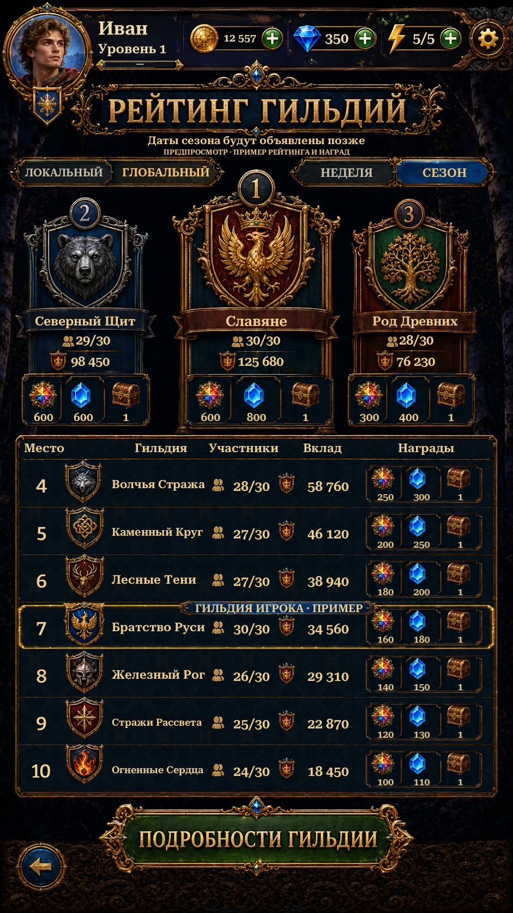

Re-extracted the complete Guild Details button with its original Russian lettering. Both languages now use the same full source bounds and proven button silhouette, retaining the dark carved details and side ornaments. The existing English blank face is reused.
Actual Unity captures below. Standings, guild membership and rewards remain labelled examples. Filters select preview states; Details explains the future online feature. Header routes and Back are functional. English uses live localized text. Repaired surfaces, live typography, tabs and footer carving still differ from the original.

Actual Unity Play Mode capture, isolated save and simulated screen/safe area.
Implementation and checks · Remaining differences · Alpha inspection